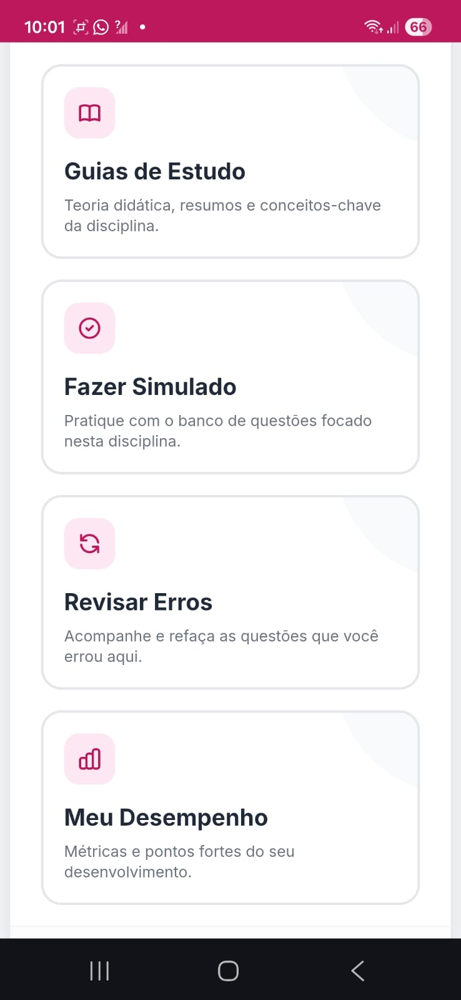
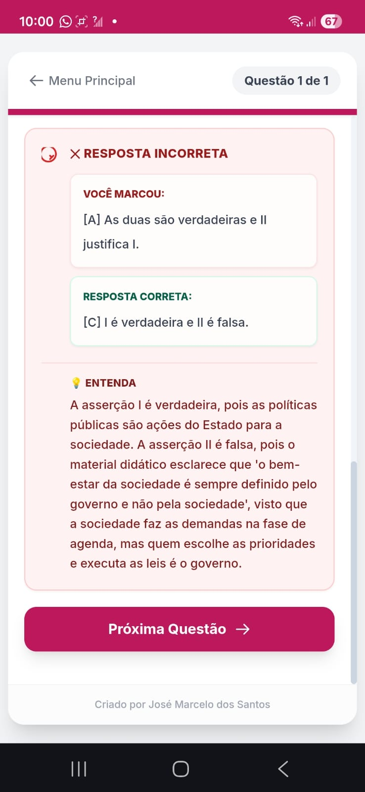
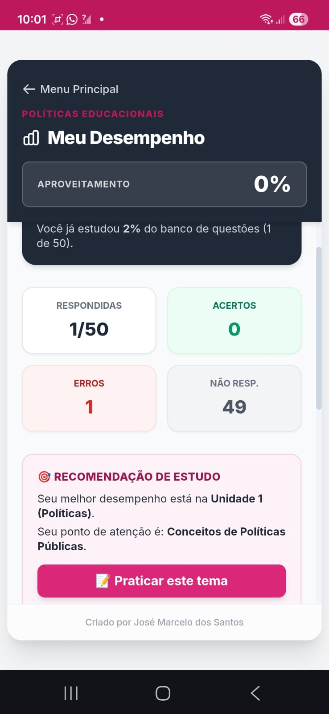

Desenvolvi este sistema para facilitar nossas revisões para as provas da faculdade. Ele mastiga a teoria das disciplinas, corrige as questões na hora e mostra exatamente onde a gente precisa focar.
Ver como acessar →Tudo organizado direto no navegador do seu celular ou PC.

Acesse guias de estudo resumidos e um banco de questões selecionadas e atualizadas para a nossa disciplina atual.

Se errar uma questão, o sistema não dá apenas o gabarito. Ele te explica o conceito na mesma hora para você não errar mais.

Acompanhe seus acertos e veja gráficos automáticos que recomendam qual unidade você precisa revisar mais.
Eu estruturei os estudos da nossa última disciplina usando exatamente a mesma lógica de revisão de erros da plataforma. Dá uma olhada no resultado:
Se funcionou para mim, vai funcionar para você também!
Para manter o banco de dados online e a plataforma sem anúncios para a nossa turma, existe um custo de hospedagem. Para quem quiser acessar os simulados de cada disciplina, estamos dividindo esse valor.
Taxa única para liberar a disciplina atual
Eu crio seu login assim que confirmar a sua participação.